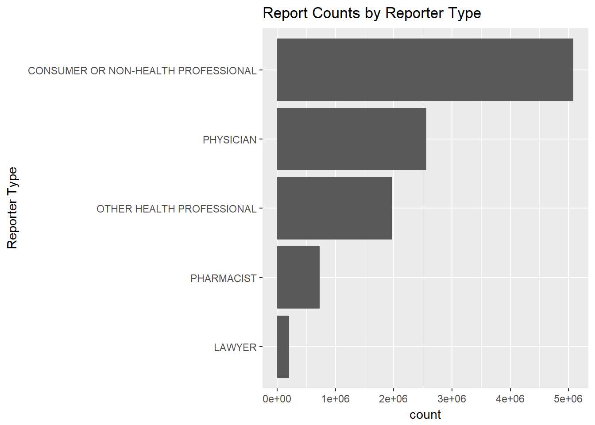
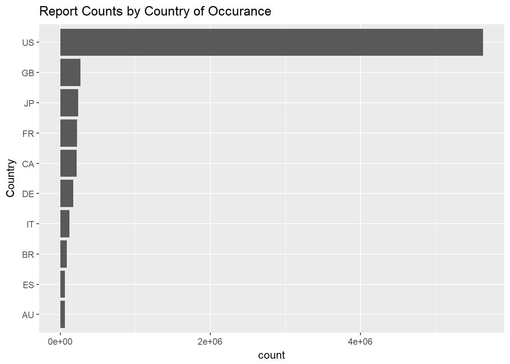
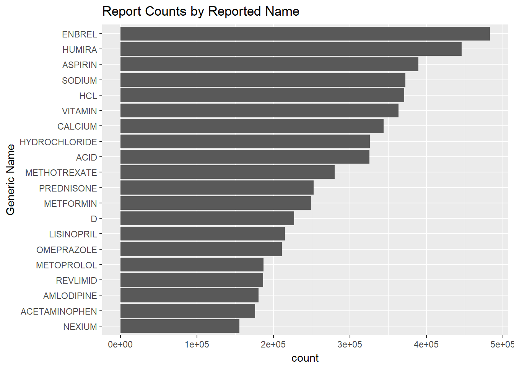

Inital Data Exploration
High-Level Data Exploration
NOTE ABOUT USING COUNT RESPONSES EXACT VS. NOT, RELATED IMPLICATIONS, and an examples
- Top reported events (by SAE classification)
qList = list(
"count" = "patient.reaction.reactionmeddrapt.exact",
"limit" = 10)
countPlot(getResults(qList), "Adverse Event Type", "Top-10 Reported Adverse Events FAERS")
- Reporter Type
qList$count = "primarysource.qualification"
countPlot(getResults(qList), "Reporter Type", "Report Counts by Reporter Type", mapCategories = "primarysource.qualification")
- Reporting countries
qList$count = "occurcountry.exact"
countPlot(getResults(qList), "Country", "Report Counts by Country of Occurance")
qList$count = "serious"
mapCategoryValues(getResults(qList), qList$count)## term count
## 1 SAE 6453837
## 2 AE 4717374Exploring AE Reporting
Reporter Type
compareAE = function(count_group, mapCatValues = FALSE, limit = 10){
qList = list(count = count_group, limit = 1000)
count_table = getResults(qList)
# ADD SAE COUNTS
qList$search = "serious:1"
count_table = merge(count_table, getResults(qList), by = "term")
names(count_table)[2:3] = c("total_reports", "SAE")
count_table$SAE_PCT = count_table$SAE / count_table$total_reports
# ADD AE COUNTS
qList$search = "serious:2"
count_table = merge(count_table, getResults(qList), by = "term")
names(count_table)[5] = "AE"
count_table$AE_PCT = count_table$AE / count_table$total_reports
# JUST CONFIRMING THAT SAE AND AE REPORT COUNTS ARE MUTUALLY EXCLUSIVE
count_table$net_pct = count_table$AE_PCT + count_table$SAE_PCT
if(mapCatValues) count_table = mapCategoryValues(count_table, qList$count)
count_table = count_table[order(-count_table$total_reports), ]
return(count_table[1:min(nrow(count_table), limit), ])
}
compareAE("primarysource.qualification", mapCatValues = TRUE)## term total_reports SAE SAE_PCT
## 5 Consumer or non-health professional 5086051 2114003 0.4156472
## 1 Physician 2560652 1853834 0.7239695
## 3 Other health professional 1974701 1446134 0.7323306
## 2 Pharmacist 730946 435467 0.5957581
## 4 Lawyer 202094 186435 0.9225163
## AE AE_PCT net_pct
## 5 2972048 0.58435277 1
## 1 706818 0.27603048 1
## 3 528567 0.26766938 1
## 2 295479 0.40424190 1
## 4 15659 0.07748375 1Country
compareAE("occurcountry.exact")## term total_reports SAE SAE_PCT AE AE_PCT net_pct
## 137 US 5632840 2072750 0.3679760 3560090 0.632023988 1
## 48 GB 271808 268690 0.9885287 3118 0.011471333 1
## 71 JP 239491 230887 0.9640738 8604 0.035926193 1
## 47 FR 224432 221951 0.9889454 2481 0.011054573 1
## 25 CA 221497 217652 0.9826408 3845 0.017359152 1
## 37 DE 172816 168591 0.9755520 4225 0.024447968 1
## 68 IT 124958 123730 0.9901727 1228 0.009827302 1
## 20 BR 87637 85848 0.9795862 1789 0.020413752 1
## 44 ES 63214 62363 0.9865378 851 0.013462208 1
## 8 AU 60248 58550 0.9718165 1698 0.028183508 1Exploring Drug Names Within Reports
- Generic Drug Names Included in Report
ADD NOTE ABOUT openFDA field harmonization when it comes to drug names
qList$count = "patient.drug.openfda.generic_name.exact"
qList$limit = 20
countPlot(getResults(qList), "Generic Name", "Report Counts by Harmonized Generic Name")
qList$count = "patient.drug.medicinalproduct"
qList$limit = 20
countPlot(getResults(qList), "Generic Name", "Report Counts by Reported Name")
qList$search = "patient.drug.medicinalproduct:METFORMIN"
qList$count = "patient.drug.medicinalproduct.exact"
qList$limit = 1000 #counts are limited to 1000 results
raw_met_count = getResults(qList)
raw_met_count = raw_met_count[grepl("METFORMIN", raw_met_count$term), ]
names(raw_met_count)[2] = "raw_count"
raw_met_count## term raw_count
## 1 METFORMIN 161718
## 2 METFORMIN HCL 54484
## 11 METFORMIN HYDROCHLORIDE. 12863
## 37 METFORMIN HYDROCHLORIDE 6814
## 185 METFORMIN (METFORMIN) 1737
## 495 METFORMIN ER 616
## 588 METFORMIN (UNKNOWN) 507
## 634 GLYBURIDE AND METFORMIN HCL 470
## 773 GLUCOPHAGE /USA/ (METFORMIN HYDROCHLORIDE) 351
## 789 METFORMIN HYDROCHLORIDE ER 339
## 856 GLYBURIDE/METFORMIN 300qList$search = "patient.drug.openfda.generic_name:METFORMIN"
qList$count = "patient.drug.medicinalproduct.exact"
qList$limit = 1000
generic_met_count = getResults(qList)
generic_met_count[grepl("METFORMIN", generic_met_count$term), ]## term count
## 1 METFORMIN 161718
## 2 METFORMIN HCL 54484
## 16 METFORMIN HYDROCHLORIDE. 12863
## 44 METFORMIN HYDROCHLORIDE 6814
## 870 METFORMIN HYDROCHLORIDE ER 339write(content(GET(createQuery(list(search = 'patient.drug.medicinalproduct:"METFORMIN+(UNKNOWN)"'))), as = "text"), file = "./data/json_extracts/METFORMIN_UNKNOWN_example.json")